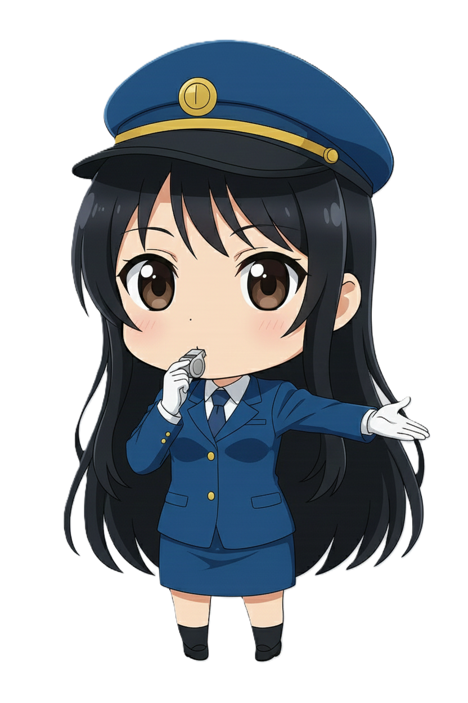

고나미 1호선
Ko Nami | 高娜美 | Takasaki Nami
| 고나미 Ko Nami |
|
|---|---|
 기본
기본
 SD효빈교통공사 1호선 공식 마스코트
|
|
| 이름 | 고나미 (Ko Nami) 日本名: Takasaki Nami (高崎娜美) |
| 나이 | 26세 (1999년생) |
| 생일 | 12월 2일 [1] |
| 소속 | 효빈교통공사 승무본부 1호선 기관사 (대리급 대우) |
| 신장 | 165cm |
| 출신지 | 효빈광역시 중구 오석동 |
| 학력 |
리사초등학교 (졸업) 효빈중학교 (졸업) 효빈동여자고등학교 (졸업) 효빈대학교 (철도운전시스템공학 / 학사) |
| 가족 관계 | 부모님, 남동생(고나루) |
| MBTI | ISTJ (청렴결백한 논리주의자) |
| 별명 | 고캡틴, FM마녀, 성덕, 철도 사냥개, 인간계 최강 철덕, 걸어다니는 철도안전법 |
| 성우 |
日: 세토 아사미 韓: 박지윤 |
"규정은 피로 쓰였습니다. 안전 운행, 정시 운행, 이상 무!"
"지금부터, 특별 교육입니다. (안전수칙 제154조부터 암송 실시.)" - 교육 모드 발동 시
1. 개요
효빈권 광역전철 1호선을 상징하는 마스코트 캐릭터이자, 효빈교통공사 캐릭터 유니버스의 명실상부한 군기반장이자 맏언니입니다. 캐릭터 설정상 나이는 26세(1999년생)이며, 생일인 12월 2일은 실제 효빈 도시철도 1호선의 최초 개통일(1984년)에서 따왔습니다.
직업은 1호선 전동차를 운전하는 기관사이며, 뛰어난 실력을 인정받아 젊은 나이에 대리급 대우를 받고 있습니다. 평소에는 과묵하고 깐깐한 원칙주의자(FM) 리더로 통하지만, 그 실체는 숨길 수 없는 광기의 SSS급 철도 동호인(성덕)입니다. 사원증을 목에 건 순간의 냉철한 '정색 모드'와, 퇴근 후 카메라를 들었을 때의 뜨거운 '폭주 모드'의 대비가 극심한 것이 가장 큰 매력 포인트입니다. 본인은 철저하게 일코(일반인 코스프레)를 하고 있다고 굳게 믿고 있으나, 안타깝게도 이미 본사 사장님부터 말단 청소부 여사님까지 전사적으로 다 들킨 지 오래라는 유쾌한 후문이 있습니다.
2. 상세 설정
2.1. 성격: FM과 성덕의 공존
표면적으로는 숨 막히는 완벽주의자이자 프로 의식으로 똘똘 뭉친 엘리트입니다. 출근 전 유니폼의 주름을 칼같이 세우는 것은 기본이요, 열차 시각표와 안전 수칙을 마치 성경처럼 달달 외우고 다닙니다. 후배들에게도 극도로 엄격하여 "규정은 선배들의 피로 쓰였다."는 섬뜩한 명언을 입에 달고 삽니다. 대기실 분위기가 조금이라도 해이해지면 특유의 단문형 말투("안 돼.", "규정대로 해.", "확인해.")로 상황을 일격에 정리해버립니다. 특히 심기가 불편할 땐 성우급 저음으로 "녹음실 경고"를 날려 상대를 얼어붙게 만드는데, 이때 나오는 목소리가 워낙 고급스러워서, 일부러 지적을 받기 위해 장난을 치는 하루빈 같은 짓궂은 후배도 존재할 정도입니다.
하지만 이 모든 카리스마는 새로운 전동차 앞에서는 무용지물이 됩니다. 그녀의 본모습은 통제 불능의 하드코어 철도 덕후. 신형 전동차의 갑종회송(반입) 정보가 뜨거나 드문 희귀 편성을 목격하면 눈빛이 0.3초 만에 맹수를 방불케 하는 '사냥개 모드'로 돌변합니다. 전동차 구동음(VVVF), 도어 개폐음, 심지어 역내 안내방송 멘트의 미세한 업데이트 내역까지 편집증적으로 집착하며 고음질 마이크로 녹음하고 다닙니다. 정색하고 후배를 혼내다가도, 창밖으로 신형 KTX-이음이 지나가면 시선이 그쪽으로 고정되며 말이 빨라지는 갭 모에가 일품입니다.
2.2. 학업 및 업무 능력
'덕업일치'를 완벽하게 이룬 엘리트로, 문과의 암기력과 이과의 공간지각능력을 모두 갖춘 사기 캐릭터입니다.
| 구분 | 상세 내용 |
|---|---|
| 학업 성향 |
인문/사회 강세 + 운전 적성(물리) 국어 1~2등급, 사회 1~2등급, 수학 1~2등급, 과학 2~3등급 종합 내신 1.8~2.3 (탐구형+규칙형) ※ 과학 과목은 철도와 다소 거리가 먼 생물 과목이 발목을 잡았다는 귀여운 일화가 있습니다. |
| 업무 역량 |
매뉴얼 독해 및 암기 능력 최상(SSS급). 돌발 상황 발생 시 위기 대응 능력이 침착함을 넘어선 수준으로, 팀의 든든한 '안전 기준점' 역할을 수행합니다. |
| 덕력 (철도 한정) |
인간계 최강. 탈인간급 센서 탑재. 지하철 소음 속에서도 구동음만 듣고 모터의 제조사와 연식을 감별해냅니다. 승강장 진입음 0.5초만 듣고도 "어? 이거 114편성이네." 하고 맞추는 기행을 일삼습니다. |
효빈동여자고등학교 시절부터 사회 탐구 영역에서 전국구급 두각을 나타냈으며, 이때 다져진 암기력은 현재 방대한 양의 철도안전법과 운전 규정을 통째로 머릿속에 집어넣는 사기적인 스펙의 기반이 되었습니다. 엄청난 덕심을 추진력 삼아 효빈대학교 교통대학 철도운전시스템공학과를 수석으로 박살 내고 졸업했습니다.
2.3. 말투 및 유행어
- 기본 톤 (업무 모드): 감정이 거세된 단문형, 결론 위주. ("안 돼.", "매뉴얼 3장 2항 위반이야.", "규정대로 처리해.", "확인.")
- 교육 모드: "지금부터, 특별 교육입니다." (주로 하루빈이 사고를 치거나 뺀질거릴 때 발동합니다. 이 대사가 나오는 순간 대기실의 온도가 5도쯤 내려가며 후배들은 숨을 참습니다.)
- 덕질 모드 (폭주): 눈동자가 커지며 말이 3배속으로 빨라지고 톤이 하이솔(Sol)까지 올라갑니다. ("잠깐, 방금 이 구동음! 미쓰비시 GTO 초기형 인버터 소리인데 이게 왜 지금 여기서 들리는 거지?! 104편성은 어제 기지 입고됐을 텐데?!")
- 안내방송 톤: 성우 세토 아사미 / 박지윤 특유의 기품 있고 차분한 톤. 꾸벅꾸벅 졸던 승객들도 이 목소리를 들으면 본능적으로 척추를 세우고 자세를 고쳐 앉게 만드는 마력을 지녔습니다.
2.4. 정치 성향
- 對 윤대환 (전 시장): 경멸을 넘어선 혐오.
안전을 종교이자 신앙처럼 여기는 기관사로서, 과거 윤대환 전 시장이 저지른 보여주기식 행정과 막가파식 안전 예산 삭감, 그리고 가장 뼈아픈 5호선 공사 중단 사태 등을 '철도에 대한 중대 범죄'로 규정하고 극도로 혐오합니다. 휴게실 TV에서 윤대환 이야기만 나와도 들고 있던 커피잔이 흔들릴 정도로 불쾌해하며, 표정이 영하 20도 급으로 차가워집니다. - 對 박효빈 (현 시장): 절대적 신뢰 및 팬심.
고나미의 '최애 정치인'이자 열렬한 지지자입니다. 박효빈 시장(1996년생) 취임 이후 추진된 노후 전동차 전면 교체 사업과 기관사 안전 인력 충원 등을 현장에서 직접 체감했기 때문입니다. 사석에서는 박효빈 시장을 "참된 리더", "철도와 현장을 아는 분"이라고 열띠게 칭송하며, 거의 사생팬 수준의 맹목적인 충성심을 보입니다. 선거철만 되면 주변 동료들에게 은근슬쩍 기호 1번 지지를 권유하는 열성적인 모습도 종종 포착됩니다.
2.5. 외형 및 디자인
풍성하게 내려오는 흑발의 긴 생머리를 지녔습니다. 살짝 웨이브가 들어간 머리끝과 단정하게 정돈된 앞머리가 특징으로, 청순파 미소녀의 정석을 보여줍니다. 눈은 크고 동그란 갈색 눈인데, 차분하고 어른스러워 보이는 흑발과 대비되어 오히려 호기심 많고 똘망똘망한 인상을 줍니다. 물론 신형 전동차 구동음을 들었을 때 한정으로는 맹수의 눈빛으로 돌변하는 반전 매력을 뽐냅니다.
복장은 1호선의 상징색인 파란색(#0077DD)을 베이스로 한 깔끔한 승무원 제복 핏이 돋보입니다. 금장 단추가 포인트인 푸른색 재킷과 H라인 미니스커트, 정갈한 넥타이와 흰색 장갑의 조합이 완벽한 철도원의 모습을 구현하고 있습니다. 머리에 쓴 승무원 모자와 마이크를 쥐고 있는 모습 덕분에 당장이라도 역내 안내방송을 할 것 같은 프로페셔널함도 느껴지는 것이 특징입니다. 철저한 원칙주의자 치고는 치마 길이가 활동하기 불편해 보인다는 농담 섞인 의문이 제기되기도 하지만, 캐릭터 디자인의 미적 요소를 극대화한 결과로 많은 팬들의 사랑을 받고 있습니다.
단정하고 엘리트 같은 외모와 다르게, 마이크를 쥐고 무언가 열심히 설명하려는 듯한 역동적인 포즈와 동그랗게 뜬 눈에서는 은근한 맹함 내지는 4차원 속성이 엿보이는 것이 갭 모에 요소 중 하나입니다. 마치 뱅드림의 파란색 혜성 베이스 기타를 치는 하나조노 타에처럼 엉뚱한 마이페이스로 주변을 휘어잡는 매력이 돋보입니다. 다른 효빈교통공사 마스코트 멤버들이 각자의 톡톡 튀는 개성을 뽐낼 때, 고나미는 가장 '기본에 충실한 철도 마스코트'이면서도 은은하게 뿜어져 나오는 백치미로 귀여움을 어필하는 포지션입니다.
2.6. 성우 연기톤
기본적인 목소리는 차분하고 지적인 저음의 아나운서 톤입니다. 열차 내 안내방송을 할 때나 후배들을 엄격하게 지도할 때는 극도로 감정이 절제된 톤을 유지하지만, 전동차 구동음이나 철도 관련 이야기가 나오면 텐션이 수직 상승하며 말이 3배속으로 빨라지는 완벽한 갭 모에 연기가 특징입니다. 한일 양국 성우 모두 이 'FM 모드'와 '철덕 폭주 모드'의 스위치 전환을 완벽하게 소화해 냈습니다.
한국판 담당 성우인 박지윤은 주로 디즈니 애니메이션의 안나(겨울왕국)나 라푼젤 같이 발랄하고 에너지 넘치는 공주님, 혹은 쾌활한 소녀 연기로 대중에게 매우 친숙합니다. 하지만 고나미 연기에서는 그 특유의 하이톤을 쫙 빼고, 극도로 차분하고 위엄 있는 사관학교 교관 톤을 구사합니다. 때문에 평소 박지윤 성우의 연기만 알던 팬들은 엔딩 크레딧을 보고 "이게 안나라고?!" 라며 경악하는 경우가 많습니다. 발랄한 소녀 대신 "같이 매뉴얼 외울래?"라고 묻는 듯한 엄격한 교관의 모습을 완벽하게 소화해 냈습니다.
물론 고나미가 철덕 모드로 폭주하여 신형 모터 찬양을 늘어놓을 때는, 안나 시절의 그 통통 튀고 산만한(?) 텐션이 튀어나오며 기가 막힌 싱크로율을 보여줍니다.
일본판 담당 성우인 세토 아사미는 '청춘 돼지 시리즈'의 사쿠라지마 마이나 '주술회전'의 쿠기사키 노바라 등, 쿨뷰티 계열이나 기가 센 누님 연기의 1인자로 꼽힙니다. 고나미의 깐깐한 'FM 마녀' 속성과 세토 아사미 특유의 나긋나긋하면서도 서늘한 저음이 그야말로 찰떡궁합을 자랑합니다. 하루빈에게 내리는 "특별 교육입니다" 대사는 묘하게 마이 선배에게 짓밟히는(?) 포상을 연상케 하여 일부 변태 팬덤을 양산하기도 했습니다.
반대로 희귀 열차를 보고 흥분할 때는 '치하야후루'의 아야세 치하야가 카루타 삼매경에 빠졌을 때 내는 그 맹목적이고 광기 어린 하이톤으로 돌변해 성우 장난의 진수를 보여줍니다.
3. 가족 관계 (숨 막히는 원칙주의 K-가정)
"우리 집 가훈요? '기본과 원칙, 그리고 정시 퇴근'. 질문 있습니까?"
효빈교통공사 내에서도 고나미의 흔들림 없는 원칙주의와 고급스러운 안내방송 목소리의 출처는 늘 미스터리였습니다. 하지만 그녀의 본가(중구 오석동)를 방문해 본 동료들은 그 숨 막히는 가족 구성원들의 면면을 보고 "아, 저런 집안에서 자랐으니 고캡틴이 될 수밖에 없구나"라며 고개를 끄덕였다고 합니다. 완벽한 100% 토종 한국인 가족이며, 집안 분위기는 거의 '사관학교'에 가깝습니다.
- 아버지 (고OO, 58세): 전직 철도청(현 코레일) 소속 호랑이 검수원. 고나미에게 "규정은 선배들의 피로 쓰였다"는 무시무시한 명언과 철도인으로서의 긍지를 뼛속 깊이 새겨준 장본인입니다. 집안에서도 열차 다이어그램을 짜듯 철저한 시간 관리를 강조하며, 고나미가 어릴 적부터 장난감 기차 대신 '철도안전법 법전'을 읽어주며 재웠다는 전설이 있습니다. 고나미의 깐깐함은 100% 아버지의 유전자입니다.
- 어머니 (이OO, 55세): 전직 국어 교사 출신의 K-어머니. 고나미 특유의 승객을 압도하는 기품 있고 신뢰감 넘치는 '성우 톤 안내방송'과 완벽한 딕션은 어머니의 밥상머리 '바른말 고운말' 조기 교육 덕분입니다. 집안에서 고나미가 조금이라도 흐트러진 발음이나 은어를 쓰면, 어머니가 곧바로 "나미야, 방금 그 발음은 장음 처리가 틀렸고 복식호흡이 풀렸잖니. 다시 해보렴."이라며 정색하고 디렉팅을 봅니다.
- 남동생 (고나루, 21세): 이 숨 막히는 FM 집안의 유일한 민간인이자 최대 피해자. 평범한 대학교 2학년 문과생입니다. 아침 6시 알람과 동시에 이불의 주름을 3cm 오차 이내로 각 잡고 개어야 하는 집안 규율에 매일 고통받고 있습니다. 누나인 고나미가 퇴근하고 집에 오면 본능적으로 책상 앞에 정자세로 앉아 전공책을 폅니다. 누나가 술에 취해 '인간 자동안내방송기' 모드가 되어 현관문을 열고 "이번 역은 우리 집입니다. 췻-" 하고 들어오면, 체념한 표정으로 누나를 방으로 수송하는 전담 요원입니다.
4. 인간 관계
공사 내부에서는 철저하게 직급과 선후배 호칭을 지키지만, 학생 나이대의 어린 캐릭터들에게는 이름을 부르거나 '~학생'이라고 칭하며 묘하게 부드러워집니다.
직속 대학 후배이자 영원한 애증의 관계입니다. 허구한 날 뺀질거리고 틈만 나면 땡땡이를 치려는 하루빈을 "특별 교육"이라는 명목하에 참교육하는 게 고나미의 주요 일과입니다.
※ 비하인드: 하루빈이 고나미의 엄격한 안내방송이나 지적하는 목소리 파일을 몰래 'ASMR 폴더'에 저장해두고, 수면 장애가 올 때나 멘탈이 흔들릴 때 듣는다는 충격적인 소문이 있습니다. 하루빈의 엉뚱한 성격을 엿볼 수 있는 대목입니다. 고나미는 이 행동을 알고서도 모른 척하는 건지, 진짜 눈치를 못 챈 건지 불분명하지만... 최근 "발음 교정을 위한 참고 자료라면 저장은 허가한다."며 쑥스러운 듯 허락해 준 적이 있습니다.
'진성 기계/철도 덕후'로서 서로 영혼이 통하는 유일한 사이입니다. 임세하가 대학 시절 "신형 모터 배선도 구경하느라 전공 수업 째고 F학점 받았다"고 고백했을 때, 다른 동기들은 어이없어하며 웃어넘겼지만 오직 고나미만이 어깨를 쓰다듬으며 "그 마음 십분 이해한다. 모터의 구동 계통은 학점 따위보다 중대한 사안이지."라며 진지하게 쉴드쳐준 전설적인 일화가 있습니다. 둘이 휴게실에서 만나면 "구형 저항제어 차량이 주는 거친 낭만과 회생제동의 효율성"에 대해 3시간 동안 외계어로 토론하곤 합니다.
통제 불능의 호기심 덩어리 막내입니다. 유리아가 호기심을 못 이겨 '비상 정지' 버튼으로 손을 뻗기 0.1초 전에 귀신같이 나타나 뒷덜미를 낚아채는 공식 보호자 역할입니다. 엄하게 혼내다가도, 유리아가 "선배님 저 오늘 매뉴얼 3장 다 외웠어요!"라며 칭찬을 갈구하는 강아지 눈빛을 쏘면 한숨을 쉬면서도 입꼬리가 씰룩거리는 걸 막지 못합니다.
5. 철덕 모먼트 및 사건 사고 (일화)
🚨 곽암해수욕장역 지하기지 침투 사건 (vs 유리아)
8호선이 개통된 지 얼마 지나지 않아 자체 차량기지가 없던 시절, 1호선의 곽산차량기지(곽암해수욕장역 내부)를 더부살이로 공용 사용하던 때 터진 대형 사고 미수 사건입니다. 실습을 핑계로 차량기지에 온 8호선 마스코트 유리아가 구석에 보존된 1호선 초창기(1984년식) 아날로그 릴레이 계전기 제어반을 발견하고 흥분해 스패너를 꺼내 덮개를 풀기 시작했습니다.
유리아가 "야바이!! 이 아날로그 접점 소리 스고이!!"를 외치던 찰나, 뒤에서 영하 20도의 한기를 내뿜는 고나미가 나타났습니다. "안 돼. 규정 위반이야. 외부인 통제 구역 장비 무단 훼손. 지금부터, 특별 교육입니다." 유리아는 반사적으로 엎드려 "고멘나사이!!"를 외치면서도 눈치 없이 "근데 선배님... 아까 조였더니 노이즈 잡혀서 물리적 접점 소리가 진짜 예술이던데..."라고 덕후 발언을 해버렸습니다.
순간 고나미의 '하드코어 철덕' 스위치가 눌려버렸습니다. 고나미는 당황하며 황급히 유리아를 쫓아냈지만, 혼자 남아 유리아가 조여놓은 릴레이 스위치를 작동시켜 보고는 그 완벽한 타격음을 고음질 마이크로 몰래 녹음하여 'Project V' 폴더에 저장했다는 전설이 1호선 기관사들 사이에 내려오고 있습니다.
🔊 삼겹살과 GTO 인버터 사건
부서 회식 자리에서 불판에 삼겹살이 올라가고 치이익- 고기 굽는 소리가 나던 평화로운 순간이었습니다. 갑자기 고나미가 젓가락을 탁 내려놓으며 "어? 잠깐. 이 소리, 미쓰비시 GTO 초기형 인버터(VVVF) 구동음이랑 주파수 대역이 완벽하게 똑같은데?"라고 발언해 왁자지껄하던 고깃집 분위기를 일순간에 빙하기로 만들어버렸습니다.
심지어 헛소리가 아님을 증명하겠다며 스마트폰 주파수 튜너 앱을 켜서 데시벨과 파장을 기어이 측정해 내고야 말았습니다. 그녀의 못 말리는 철도 사랑을 보여주는 대표적인 에피소드입니다. 그 참사 이후로 승무본부 회식 때 고나미 테이블 앞에서는 그 누구도 감히 고기를 굽지 않는 암묵적인 룰이 생겼다고 합니다.
📁 금지된 심연의 폴더 'Project V'
그녀의 개인 업무용 노트북 바탕화면 구석에는 'Project V'라는 수상한 이름의 3중 암호화 폴더가 존재합니다. 룸메이트였던 라세나가 우연히 비밀번호가 풀린 틈을 타 몰래 열어보았는데, 회사 기밀 문서나 사생활과 관련된 평범한 내용이 아니라 전 세계 전동차의 구동음(VVVF)과 안내방송을 무손실 음원(FLAC)으로 직행 녹음하여 제조사/연식/노선별로 꼼꼼하게 분류해 놓은 소리 폴더였습니다.
파일명이 [극락] 도시바_IGBT_가속음_도어엔진변주_고음질.wav, [눈물] 1호선_구형저항_마지막퇴역_제동음.mp3 같은 식이었다고 라세나는 질린 표정으로 증언했습니다.
🍺 공포의 주사: 인간 자동안내방송기
평소에는 술자리를 칼같이 피하지만, 어쩌다 회식에서 한계치 이상을 마셔 만취하게 되면 평소의 깐깐한 냉철함은 온데간데없이 사라지고 '인간 안내방송 시스템' 모드가 강제 부팅됩니다.
회식 후 택시 뒷좌석에 타면 기사님을 향해 "출입문 닫습니다. 발빠짐에 주의하시기 바랍니다. 췻-" 하고 문 닫히는 공기압 소리까지 입으로 내고, 본인 집 앞에 도착해서 하차할 때는 "이번 역은 우리 집, 우리 집 역입니다. 내리실 문은... 오른쪽입니다. 삐- 삐- 삐-" 라며 경고음까지 완벽하게 모사하며 귀여운 진상을 부립니다. 더 소름 돋는 건 혈중알코올농도가 치솟은 상태에서도 그 발음과 성우 톤의 피치(Pitch)가 평소와 0.1%의 오차도 없이 완벽하다는 점입니다.
💘 "그냥... 너무 예뻐서..."
임세하와 중정비를 마친 차량기지를 견학 갔을 때의 일입니다. 기름때가 잔뜩 묻어있는 시커먼 대차(Bogie, 전동차 바퀴 틀)를 물끄러미 바라보던 고나미는 갑자기 뺨을 붉게 붉히더니 홀린 듯이 손을 뻗었습니다.
그리고는 "아름답지 않아? 하중을 견뎌내는 이 완벽한 강철의 곡선..."이라며 기름 떡진 고철 덩어리를 소중한 아기 다루듯 쓰다듬었습니다. 웬만한 기계공학 덕후인 임세하마저 그 끈적한 눈빛에 기겁하며 "언니, 그건 좀 병이야..."라며 뒷걸음질 쳤다는 전설적인 후문입니다. 그녀에게 있어 기름 냄새 나는 정비창과 잘 닦인 철도 차량은 아이돌 콘서트장 1열보다 황홀하고 눈부신 성지입니다.
6. 여담 및 설정 비화
6.1. [설정 비화] "타카사키 나미"의 진실 (성덕의 이중생활)
"아, 타카사키 나미요? 그거 그냥 효빈메트로 일본 수출용 로컬라이징 이름입니다만. ...왜 제 눈을 피하시죠?" (동공 지진이 일어난 고나미)
완벽한 한국인임에도 불구하고 프로필에 일본명(타카사키 나미, 高崎娜美)이 당당하게 배정되어 있는 이유. 공식적으로는 효빈메트로 캐릭터 사업의 '해외 진출용 로컬라이징'이지만, 사실 철덕들 사이에서는 공공연한 비밀이 하나 있습니다. 예상치 못한 설정이 굳어진 데에는 재미있는 뒷이야기가 있습니다.
'타카사키 나미'라는 이름은 원래 고나미가 대학 시절 일본으로 '철도 순례 원정'을 다닐 때, 그리고 일본 철도 오타쿠 커뮤니티(2ch, 5ch 철도판 등)에서 활동할 때 쓰던 비밀 닉네임(부캐)이었다는 것입니다! 이름의 유래도 본인의 성씨인 '고(高)'와 일본의 유명한 철도 노선인 '다카사키선(高崎線)'을 교묘하게 합친 전형적인 철덕식 작명입니다. 이름에서부터 진성 철도 팬의 깊은 내공이 느껴지는 작명 센스입니다.
이 귀여운 흑역사(?)를 회사 홍보팀에서 우연히 알게 되었고, 캐릭터 사업을 기획할 때 홍보팀 직원이 "어차피 일본 진출도 할 건데, 고 대리님이 평소 쓰시던 그 일본 이름 쓰죠? 찰떡이던데."라며 본인의 허락도 없이 공식 설정으로 확정해 버렸습니다. 결국 고나미는 자신의 심연 깊은 곳에 봉인해 두었던 철덕 부캐가 전 세계에 강제 공개되는 수치심을 겪어야 했고, 지금도 누가 "타카사키 상!" 하고 부르면 반사적으로 귀끝이 새빨개지며 "고나미 기관사라고 부르십시오."라며 정색합니다. 하지만 여전히 개인 SNS 부계정 아이디는 바꾸지 않고 그대로 사용 중이라는 소문이 있습니다.
6.2. 기타 여담
- 철도 순례의 광기: 휴가철이 되면 동료들은 제주도나 하와이를 갈 때, 그녀는 지방 노선이나 일본(특히 도쿄나 오사카)으로 나 홀로 '철도 순례 원정'을 떠납니다. 유명 관광지나 맛집은 일절 관심 없고, 아침부터 막차 끊길 때까지 지하철과 전철만 주야장천 갈아타거나 승강장에 서서 역 멜로디(발차음)를 수집하러 다닙니다. 자취방에 JR 계열사별 제복 컬렉션과 수백만 원짜리 철도 모형 디오라마가 방 하나를 통째로 점령하고 있다는 괴담이 있었으나, 최근 인스타그램 실수로 인해 팩트로 확인되었습니다. 단순히 방 하나가 아니라 집 전체가 철도 박물관이라는 소문도 심심치 않게 들려옵니다.
- 시장님 바라기: 자신의 최애인 박효빈 시장이 1호선 현장 시찰이라도 나오는 날엔 본부장보다 먼저 달려나가 영접(?)합니다. 시찰 동선과 일정을 사전에 몰래 빼내어 해당 구간의 운전 승무를 자원해서라도 배정받으며, 전날 밤 유니폼을 무려 3번이나 다림질하여 각을 세운다고 합니다. 그야말로 성공한 팬인 박효빈 시장과 성공한 덕후 마스코트의 기묘하고도 훈훈한 조합을 보여줍니다.
- 엄격한 디렉팅: 하루빈이 장난칠 때 고나미 특유의 깐깐한 목소리를 성대모사하며 놀리곤 하는데, 우연히 뒤에서 듣고 걸려도 혼내기는커녕 "방금 그 부분, 발성과 복식호흡이 부정확해. 아나운싱의 기본이 안 되어 있군. 다시 해봐."라며 오히려 정색하고 디렉팅을 봐줘서 하루빈을 당황하게 만듭니다. 이에 하루빈은 "아니 언니, 화를 내라고..." 라며 당황스러워한다는 귀여운 일화가 있습니다.
- [신규] 독보적인 슬렌더 라인의 수호자: 최근 효빈광역시 홍보용으로 유출된(?) 해변 휴가 사진에서 고나미의 실제 체형이 드러나며 큰 화제가 되었습니다. 2호선 하루빈이나 7호선 임세하가 압도적인 볼륨감을 뽐낼 때, 고나미는 B77 - W60 - H80이라는 경이로운 슬렌더 수치를 기록하며 '가녀린 청순미의 정석'으로 추앙받게 되었습니다. 세련되고 날렵한 체형의 매력을 한껏 발산하고 있습니다. 1호선의 파란색(#0077DD) 비키니가 흘러내릴 듯 위태로운 얇은 허리 라인이 포인트입니다. 이 때문에 팬들 사이에서는 "하루빈이 2호선의 묵직함을 상징한다면, 고나미는 1호선의 날렵함을 상징한다"는 재미있는 설정이 돌고 있습니다.
- [밈] 파란색 기타리스트와의 연결고리: 1호선의 상징색이 파란색(#0077DD)이다 보니, 옆 동네 밴드 애니메이션(뱅드림!)의 토끼를 사랑하는 4차원 파란색 기타리스트(하나조노 타에)와 묘하게 엮이는 밈(Meme)이 존재합니다. 평소 깐깐한 고나미의 성격과 타에의 마이페이스 텐션은 정반대 극과 극이지만, '무언가 하나(철도/토끼)에 광적으로 꽂혀있는 광기'라는 기묘한 공통점 때문에 2차 창작에서 자주 얽힙니다. 이름의 어감마저 묘하게 비슷하여 팬들 사이에서 더욱 사랑받는 밈으로 자리 잡았습니다.
각주
- 1호선 최초 개통일인 1984년 12월 2일과 동일합니다.